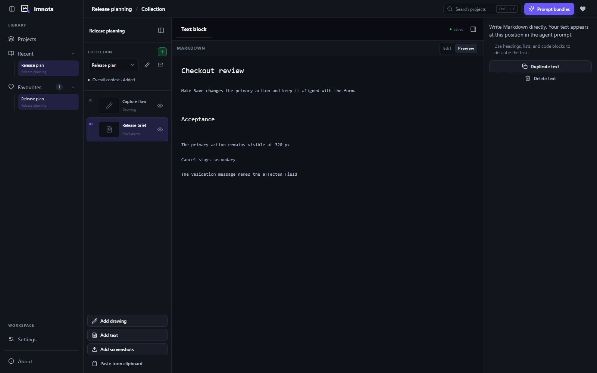

Imnota features
Every detail.
In the handoff.
A local workspace for screenshots, drawings and written explanations. Give your coding agent the whole idea in one ordered collection.
Capture & organize
Bring the screens together before explaining the changes.
- Import, paste or drag and drop
- Add PNG, JPEG and WebP screenshots in the way that fits your workflow.
- Standalone drawings
- Start with a blank drawing, use essential Excalidraw tools and connect shapes with attached connectors. Imnota saves editable JSON and a cropped PNG with a white background and padding.
- Markdown items with preview
- Write a standalone explanation in Markdown and switch between editing and preview. Text and drawing editors autosave with a saving indicator.
- Collections with shared context
- Keep screenshots, drawings and Markdown in a shared order and give the collection one overall instruction. Archive and restore collections as the work moves on.
- Keep it, without exporting it
- Include or exclude individual collection items from a prompt bundle without deleting them from the collection.
- Recover from a deletion
- Duplicate screenshots, drawings and text, or delete them with recoverable trash and Undo controls.

Annotate & refine
Point to the exact change. Keep the source intact.
- A complete annotation layer
- Use arrows, lines, shapes, highlights, text, callouts and numbered steps. Mark sensitive areas with masks.
- Non-destructive cropping
- Adjust the crop using resize handles, then Apply, Cancel or Reset. Your original screenshot is preserved.
- Editable marks, undo and redo
- Move and resize annotations without baking them into the source image. Undo and redo annotation edits as you refine the feedback.
- Canvas controls that stay out of the way
- Pan and zoom, return to actual size and collapse workspace navigation when you need more canvas.

Context & export
The image shows where. Your words explain what and why.
- Descriptions and priorities
- Add an optional Markdown description to each screenshot and set Low, Medium or High priority for your agent.
- Markdown and PNG prompt bundles
- Export screenshots, drawings and written explanations in collection order as timestamped Markdown and high-resolution prompt images.
- Text-only handoffs
- A collection containing only text exports Markdown directly, without creating placeholder images.
- Readable exports for larger collections
- Large collections split automatically into readable bundles on a white background.
- Copy the format your tool accepts
- Copy Markdown, the image or both. Combined clipboard support depends on the receiving editor; separate copy actions remain available.
A background
of your own.
Choose a local image and use one backdrop across the app. Keep your uploaded images in a local library, with grouped appearance controls in Settings.
Desktop glass is optional Beta. Rendering can glitch during scrolling or transparency. Select No image or Solid surfaces to turn it off.
Your workspace
Your files and your tools, on your machine.
- Plain local files
- Projects use JSON, Markdown and image files in folders you can copy, back up or version-control. No account, cloud storage dependency or built-in AI service is required.
- Light, dark or system
- Choose the appearance that suits your workspace, including curated settings and local backdrops.
- Stable releases or opt-in previews
- Check for updates on demand. Stay on Stable or choose Nightly for previews. Available install actions depend on your platform and package.
- Open source, from the start
- Imnota is MIT licensed, with Windows, macOS and Linux downloads. Inspect the source, build it locally or contribute an improvement.
Feature details reflect Imnota v0.2.5. See the user guide for controls and the changelog for release-specific notes.
Download the stable release